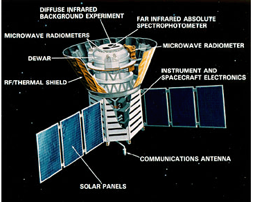

COBE - COsmic Background Explorer
George Smoot and John Mather won the 2006 Nobel prize in physics "for their discovery of the blackbody form and anisotropy of the cosmic microwave background radiation."
This historic discovery was a result of NASA's COBE (Cosmic Background Explorer) satellite mission. Dr. Smoot was the lead scientist of the Differential Microwave Radiometers (DMR) team on COBE. The DMRs were developed to to map the cosmic microwave background radiation precisely. The COBE mission was created to measure the diffuse infrared and cosmic microwave background radiation from the early universe to the limits set by our astrophysical environment.
COBE was launched on November 18, 1989 and carried three instruments: DIRBE (the Diffuse InfraRed Experiment) to search for and measure the cosmic infrared background radiation, DMR (Differential Microwave Radiometers) to map the cosmic microwave background radiation, and FIRAS (Far-InfraRed Absolute Spectrophotometer) to compare the spectrum of the cosmic microwave background radiation with that from a precise blackbody. Read more about COBE.
MAXIPOL

MAXIPOL was a bolometric balloon-borne experiment designed to measure the E-mode polarization anisotropy of the cosmic microwave background radiation (CMB) on angular scales of 10' to 2°. MAXIPOL was the first CMB experiment to collect data with a polarimeter. The primary data set was collected during a 26 hour turnaround flight that was launched from the National Scientific Ballooning Facility in Ft. Sumner, New Mexico in May 2003. During this flight five regions of the sky were mapped.
MAX, MAXIMA, and BOOMERANG were part of the NSF Center for Particle Astrophysics. The purpose of MAX, MAXIMA and BOOMERANG was to measure and eventually map cosmic microwave background (CMB) anisotropies on the sub-degree angular scale level. This is a significantly smaller angular scale than COBE (>7 degrees) observations. Read more about MAXIPOL.